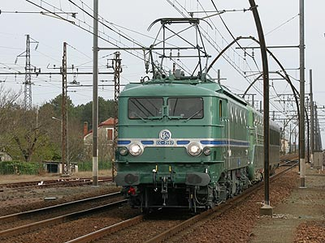

|
Patrimoine de la SNCF
|
|
La SNCF conserve plusieurs matériels qui ont jallonné son histoire. Outre les engins confiés à des associations de sauvegarde, la partie la plus importante était rassemblée à Mulhouse dans la collection du Musée du Chemin de fer. En raison sa transformation profonde, qui aura nécessité 3 ans de travaux, le Musée devenu Cité du Train avait dû fermer ses portes. L'occasion était à saisir pour faire voyager une partie du matériel à la rencontre du public. Les évènements principaux de ce programme étant l'exposition Train Capitale et la célébration du cinquantenaire du record de vitesse de 1955. Chaque manifestation est présentée en photos. Journées du Patrimoine 2002 - Paris Bercy à suivre... |

La CC 7107 emmène la BB 9004 et une DEV AO sur les traces du record des Landes 50 ans après leurs exploits (28/03/2005) |